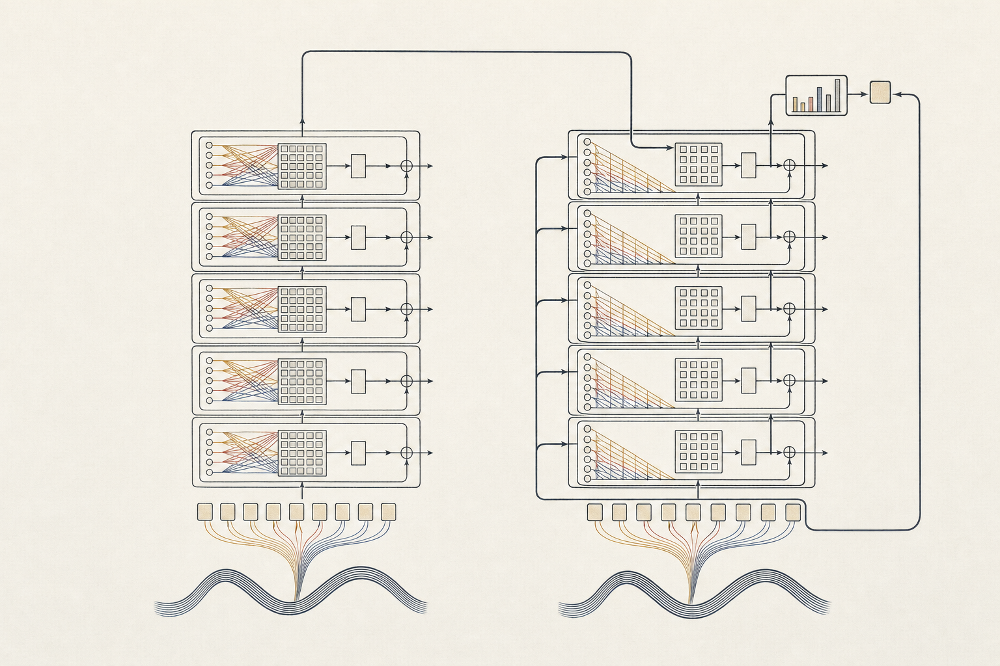

Ashish Vaswani, Noam Shazeer, Niki Parmar, Jakob Uszkoreit, Llion Jones, Aidan N. Gomez, Łukasz Kaiser, Illia Polosukhin
Google Brain; Google Research; University of Toronto
The Transformer replaces recurrence and convolution with attention, improving translation quality while enabling more parallel training and transferring successfully to constituency parsing.
Introduction
Recurrent encoder–decoder models process sequence positions sequentially, limiting parallelization within training examples.
Develop a sequence transduction architecture without recurrent or convolutional layers.
Evaluate translation quality and training cost against published recurrent and convolutional models.
Test generalization to English constituency parsing with limited and large training datasets.
Methods
Train on WMT 2014 English–German: approximately 4.5 million sentence pairs; English–French: 36 million sentence pairs, using subword tokenization.
Stack six encoder and six decoder layers; combine multi-head attention, position-wise feed-forward networks, residual connections, and layer normalization.
Compute attention as softmax(QKᵀ/√dₖ)V, using query, key, and value matrices; the base model has eight attention heads.
Add sinusoidal positional encodings; mask future decoder positions and attend to encoder outputs, preserving autoregressive generation.
Train with Adam, learning-rate warmup, dropout, and label smoothing on eight NVIDIA P100 GPUs; evaluate translation using beam search and checkpoint averaging.

Figure 1. Transformer encoder–decoder schematic: positional information enters both stacks; parallel attention heads connect sequence positions, while masked decoder attention preserves autoregressive prediction.
Results
28.4English–German test BLEU
41.8English–French BLEU, Abstract and Table 2
3.5 daysBig-model training on eight P100 GPUs
English–German: Transformer big achieves 28.4 BLEU versus 26.36 for the previously reported ConvS2S ensemble; base achieves 27.3.
English–French: Abstract and Table 2 report 41.8 BLEU versus 40.56 for the prior single-model MoE; Section 6.1 instead reports 41.0.
Base-model training takes 12 hours; big-model training takes 3.5 days, both on eight NVIDIA P100 GPUs.
English–German development ablation: eight attention heads achieve 25.8 BLEU versus 24.9 with one head; learned positional embeddings achieve 25.7.
English constituency parsing: four-layer Transformer achieves 91.3 F1 with Wall Street Journal data only and 92.7 F1 with semi-supervised training.
Conclusions
Attention-based sequence transduction improves translation quality without recurrence or convolution and supports substantially more parallel training.
Parsing results demonstrate transfer beyond translation, including training with approximately 40,000 annotated sentences.
Full self-attention has quadratic sequence-length complexity; autoregressive generation remains sequential.
Future directions include restricted attention for long sequences, non-text modalities, and less sequential generation.
References
Sutskever et al., 2014. Sequence to sequence learning with neural networks. NIPS.
Bahdanau et al., 2014. Neural machine translation by jointly learning to align and translate. CoRR.
Gehring et al., 2017. Convolutional sequence to sequence learning. arXiv:1705.03122v2.
Wu et al., 2016. Google’s neural machine translation system: Bridging the gap between human and machine translation. arXiv:1609.08144.